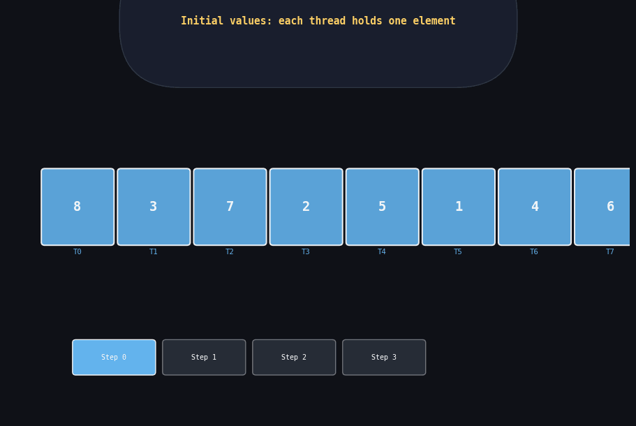

Reduction is deceptively simple: given N numbers, compute their sum. On a CPU: one loop, N-1 additions, O(N) time. On a GPU: we can use a tree to do it in O(log N) parallel steps. But getting to peak memory bandwidth efficiency requires 6 distinct optimizations, each teaching something important about how GPUs work.
I am going to trace every algorithm with concrete data so you can see exactly what is happening, not just read code and wonder why it is faster.

Tree reduction in 3 steps for 8 elements. Step 1: 4 pairs summed simultaneously. Step 2: 2 pairs. Step 3: final sum. Total: log₂(8) = 3 steps instead of 7 sequential additions. The speedup grows with N.
In this post
- The Problem: Sum N Floats on the GPU
- Reduction 1 — Interleaved (Naive, Divergent)
- Reduction 2 — Sequential Addressing (No Divergence)
- Reduction 3 — Idle Thread Elimination
- Reduction 4 — Unrolling the Last Warp
- Reduction 5 — Complete Unroll (Template)
- Reduction 6 — Warp Shuffle
- Two-Pass Reduction for Large Arrays
- CUB: The Production Answer
- Performance Comparison
The Problem: Sum N Floats on the GPU
We want: result = data[0] + data[1] + ... + data[N-1].
The GPU parallelizes by having each block reduce a chunk of data to a single value,
then either the CPU sums the per-block partial results, or a second kernel pass
reduces them further.
The fundamental GPU constraint: threads can only communicate directly within a block (via shared memory + __syncthreads). Cross-block communication requires global memory. So we do a two-level reduction: block-level in shared memory, then combine block results.
Throughout this post I will use the same 8-element example array to trace each algorithm: sdata = [5, 3, 7, 1, 4, 6, 2, 8] with 8 threads (tid 0–7), so the final answer should be 36.
Reduction 1 — Interleaved Addressing (Naive, Divergent)
__global__ void reduce1(float* g_data, float* g_out, int n) {
extern __shared__ float sdata[];
int tid = threadIdx.x;
int i = blockIdx.x * blockDim.x + threadIdx.x;
sdata[tid] = (i < n) ? g_data[i] : 0.0f;
__syncthreads();
// Interleaved addressing: stride grows each step
// Active threads are spaced farther and farther apart
for (int s = 1; s < blockDim.x; s *= 2) {
if (tid % (2 * s) == 0) { // only every (2s)-th thread is active
sdata[tid] += sdata[tid + s]; // causes warp divergence!
}
__syncthreads();
}
if (tid == 0) g_out[blockIdx.x] = sdata[0];
}Let me trace this with sdata = [5,3,7,1,4,6,2,8]:
Why it is slow — the divergence problem.
At s=1, the condition tid % 2 == 0 is checked for all 32 threads
in a warp simultaneously. Half pass (even tids), half fail (odd tids).
The hardware must execute the "if body" with evens active, then skip over it
for odds. That is a 2-path serialization — 2x slower for this step.
At s=2: 75% of threads fail the condition — 4x slower.
Reduction 2 — Sequential Addressing (No Divergence)
__global__ void reduce2(float* g_data, float* g_out, int n) {
extern __shared__ float sdata[];
int tid = threadIdx.x;
int i = blockIdx.x * blockDim.x + threadIdx.x;
sdata[tid] = (i < n) ? g_data[i] : 0.0f;
__syncthreads();
// Sequential addressing: stride SHRINKS from blockDim/2 down to 1
// Active threads are always the first (lowest-tid) half
// Key: within any warp, either ALL threads pass (tid < s) or NONE pass -- no divergence
for (int s = blockDim.x / 2; s > 0; s >>= 1) {
if (tid < s) {
sdata[tid] += sdata[tid + s]; // no bank conflicts (sequential access pattern)
}
__syncthreads();
}
if (tid == 0) g_out[blockIdx.x] = sdata[0];
}Trace with sdata = [5,3,7,1,4,6,2,8]:
Why no divergence: At s=4 with 8 threads — threads 0,1,2,3
are in the same warp as threads 4,5,6,7. The condition tid < 4
splits threads cleanly at a warp boundary only when blockDim is a multiple of 32.
For a block of 32 threads and s=16: threads 0-15 pass, threads 16-31 fail.
Since threads 0-15 are in the same warp as threads 16-31, there IS divergence here.
But the stride halves each step, so divergence only occurs for the last 5 steps
(when s < 32), not for the first many steps where s ≥ 32.
Remaining problem: When the block launches, half the threads — those with tid ≥ blockDim/2 — do exactly one thing: load from global memory, then sit idle for all reduction steps. 50% of thread-cycles wasted just on load and then nothing.
Reduction 3 — Idle Thread Elimination
__global__ void reduce3(float* g_data, float* g_out, int n) {
extern __shared__ float sdata[];
int tid = threadIdx.x;
// Key change: each thread loads TWO elements and adds them on the way in
// The block now covers 2*blockDim.x elements, not blockDim.x
int i = blockIdx.x * (blockDim.x * 2) + threadIdx.x;
// Load and add first pair directly into shared memory
float val = 0.0f;
if (i < n) val += g_data[i]; // element i
if (i + blockDim.x < n) val += g_data[i + blockDim.x]; // element i + blockDim
sdata[tid] = val; // shared memory gets the sum of two elements
__syncthreads();
// Same tree reduction as reduce2 (no divergence, no bank conflicts)
for (int s = blockDim.x / 2; s > 0; s >>= 1) {
if (tid < s) sdata[tid] += sdata[tid + s];
__syncthreads();
}
if (tid == 0) g_out[blockIdx.x] = sdata[0];
}With blockDim.x=4 processing 8 elements (i maps each thread to two inputs):
Reduction 4 — Unrolling the Last Warp
// "volatile" is critical here -- explained below
__device__ void warpReduce(volatile float* sdata, int tid) {
// These 6 lines handle the last 6 steps of the tree reduction
// (when s = 32, 16, 8, 4, 2, 1 -- i.e., all threads remaining are in ONE warp)
sdata[tid] += sdata[tid + 32];
sdata[tid] += sdata[tid + 16];
sdata[tid] += sdata[tid + 8];
sdata[tid] += sdata[tid + 4];
sdata[tid] += sdata[tid + 2];
sdata[tid] += sdata[tid + 1];
// NO __syncthreads() needed here -- all 32 threads in one warp are
// always in lockstep (SIMT execution), so each line is globally visible
// to the whole warp before the next line executes.
}
__global__ void reduce4(float* g_data, float* g_out, int n) {
extern __shared__ float sdata[];
int tid = threadIdx.x;
int i = blockIdx.x * (blockDim.x * 2) + threadIdx.x;
float val = 0.0f;
if (i < n) val += g_data[i];
if (i + blockDim.x < n) val += g_data[i + blockDim.x];
sdata[tid] = val;
__syncthreads();
// Standard loop for all steps where multiple warps are still active
// (s > 32 means threads 0..s-1 are active, which spans multiple warps)
for (int s = blockDim.x / 2; s > 32; s >>= 1) {
if (tid < s) sdata[tid] += sdata[tid + s];
__syncthreads();
}
// Last warp (tid < 32): all 32 remaining active threads are in same warp
// Hand them off to warpReduce to skip the remaining __syncthreads() calls
if (tid < 32) warpReduce(sdata, tid);
if (tid == 0) g_out[blockIdx.x] = sdata[0];
}volatile? Without volatile, the C++
compiler can legally reorder or eliminate memory writes to sdata because
it sees them as ordinary local operations within one function scope. It might keep the
values in registers and never actually write to shared memory between the lines.
volatile tells the compiler: "every read and write to this pointer
must go through actual memory, in program order, with no caching in registers."
This forces the shared memory write after each addition, ensuring the next line
reads the freshly-updated value even within the unrolled warp code.
From CUDA 9+, the preferred alternative is
__syncwarp() between lines,
but volatile still works and compiles to efficient code.
Win: Eliminates 5 __syncthreads() calls for the last warp.
Each sync costs ~20–30 cycles (serialization point for the entire block).
Removing them for the final 6 steps saves up to 150 cycles per block.
Reduction 5 — Complete Unroll (Template)
// blockSize is a compile-time constant (template parameter)
template <unsigned int blockSize>
__global__ void reduce5(float* g_data, float* g_out, int n) {
extern __shared__ float sdata[];
int tid = threadIdx.x;
int i = blockIdx.x * (blockSize * 2) + threadIdx.x;
float val = 0.0f;
if (i < n) val += g_data[i];
if (i + blockSize < n) val += g_data[i + blockSize];
sdata[tid] = val;
__syncthreads();
// These if() conditions use a compile-time constant (blockSize).
// The compiler evaluates them at compile time and eliminates dead branches.
// If blockSize=128, the blockSize>=512 and blockSize>=256 branches are
// completely removed from the generated PTX -- zero runtime overhead.
if (blockSize >= 512) { if (tid < 256) sdata[tid] += sdata[tid+256]; __syncthreads(); }
if (blockSize >= 256) { if (tid < 128) sdata[tid] += sdata[tid+128]; __syncthreads(); }
if (blockSize >= 128) { if (tid < 64) sdata[tid] += sdata[tid+ 64]; __syncthreads(); }
// Last warp (unrolled, no syncthreads):
if (tid < 32) {
if (blockSize >= 64) sdata[tid] += sdata[tid + 32];
if (blockSize >= 32) sdata[tid] += sdata[tid + 16];
if (blockSize >= 16) sdata[tid] += sdata[tid + 8];
if (blockSize >= 8) sdata[tid] += sdata[tid + 4];
if (blockSize >= 4) sdata[tid] += sdata[tid + 2];
if (blockSize >= 2) sdata[tid] += sdata[tid + 1];
}
if (tid == 0) g_out[blockIdx.x] = sdata[0];
}
// Launch with explicit block size -- the template generates specialized PTX:
reduce5<256><<<grid, 256, 256*sizeof(float)>>>(d_data, d_out, N);
// The compiled PTX for blockSize=256 has NO code for the 512 and higher branches.
// The compiler literally deletes them. Smaller binary, faster execution.if (256 >= 512) it evaluates to if (false) and
removes the entire branch. No instruction generated, no predicate evaluation,
no branch predictor pressure. The resulting PTX is a straight-line sequence
of exactly the operations needed for that block size — the theoretical
minimum instruction count for this algorithm.
Reduction 6 — Warp Shuffle (Modern CUDA)
// Intra-warp reduction using register shuffle -- no shared memory needed at all
__device__ float warpReduceSum(float val) {
// Each call: lane k adds the value from lane (k + offset) to its own val
// After 5 steps, lane 0 holds sum of all 32 original values
// See detailed trace in the warps post (4.1)
for (int offset = 16; offset > 0; offset /= 2)
val += __shfl_down_sync(0xFFFFFFFF, val, offset);
return val; // lane 0 has the total sum of this warp
}
// Full block reduction with 3 phases:
__global__ void reduce6(float* g_data, float* g_out, int n) {
__shared__ float warpSums[32]; // max 32 warps per block (blockDim.x / 32)
int tid = threadIdx.x;
int i = blockIdx.x * (blockDim.x * 2) + threadIdx.x;
float val = 0.0f;
if (i < n) val += g_data[i];
if (i + blockDim.x < n) val += g_data[i + blockDim.x];
// Phase 1: intra-warp reduction via shuffle (5 shuffles, no memory traffic)
// Each warp reduces its 32 values to 1 value in lane 0
val = warpReduceSum(val);
// Phase 2: lane 0 of each warp writes its warp's sum to shared memory
// Only 1 write per warp (max 32 writes total for a 1024-thread block)
int lane = tid % 32;
int warpId = tid / 32;
if (lane == 0) warpSums[warpId] = val;
__syncthreads(); // ensure all warp sums are written before Phase 3
// Phase 3: first warp reads all warp sums and reduces them
// nWarps <= 32, so this fits in one warp
int nWarps = blockDim.x / 32;
val = (tid < nWarps) ? warpSums[tid] : 0.0f;
if (tid < 32) val = warpReduceSum(val); // one more warp shuffle
if (tid == 0) g_out[blockIdx.x] = val; // lane 0 has the block's total sum
}Let me trace Phase 1 for a block of 64 threads (2 warps) with values 1..64 (sum should be 2080):
__shfl_down_sync communicates directly through
the warp's internal register file. No memory bandwidth consumed at all,
no bank conflict possible, no sync needed — just 5 register-to-register
moves in 5 cycles. It is the fastest intra-warp reduction the hardware can do.
Two-Pass Reduction for Large Arrays
void reduceArray(float* d_data, float* d_result, int n) {
int blockSize = 256;
// Each block handles (blockSize * 2) elements (due to the first-add-on-load trick)
// So gridSize = ceil(n / (blockSize * 2))
int gridSize = (n + blockSize * 2 - 1) / (blockSize * 2);
float* d_partial;
cudaMalloc(&d_partial, gridSize * sizeof(float));
// Pass 1: reduce N elements down to gridSize partial sums
reduce6<<<gridSize, blockSize, 0>>>(d_data, d_partial, n);
// Pass 2: reduce gridSize partial sums down to 1 result
// (gridSize is typically small -- a few hundred blocks)
// Use one block to fit entirely in shared memory
reduce6<<<1, blockSize, 0>>>(d_partial, d_result, gridSize);
cudaFree(d_partial);
}
// For N = 16M elements, blockSize = 256:
// gridSize = 16M / 512 = 32768 partial sums
// Pass 1: 32768 blocks each reducing 512 elements
// Pass 2: 1 block reducing 32768 partial sums (fits easily in 256 threads)CUB: The Production Answer
For production code, use CUB's DeviceReduce. It implements all the
optimizations above (and more: vectorized loads, multi-pass recursion, architecture
tuning) and is maintained by NVIDIA to achieve near-peak bandwidth on every GPU generation.
#include <cub/cub.cuh>
// CUB device-wide reduction (single function call, handles all edge cases)
void cubReduce(float* d_data, float* d_result, int n) {
void* d_temp = nullptr;
size_t tempBytes = 0;
// First call with null temp storage: CUB tells you how much temp space it needs
cub::DeviceReduce::Sum(d_temp, tempBytes, d_data, d_result, n);
// Allocate the temp storage
cudaMalloc(&d_temp, tempBytes);
// Second call: actual reduction
cub::DeviceReduce::Sum(d_temp, tempBytes, d_data, d_result, n);
cudaDeviceSynchronize();
cudaFree(d_temp);
}
// CUB also provides: Min, Max, ArgMin, ArgMax, and custom binary operators
cub::DeviceReduce::Reduce(d_temp, tempBytes, d_data, d_result, n,
cub::Max(), INT_MIN); // custom: maximum valuePerformance Comparison
CUB reaches 63% of theoretical peak bandwidth. The remaining gap is irreducible: kernel launch overhead, the two-pass structure (Pass 2 is very small and underutilizes the GPU), and the fact that partial sums in Pass 1 require sequential writes. The hand-written reduce6 reaches 43% of peak — a very strong result for a simple kernel written from scratch.
Each optimization step in this progression teaches something that applies far beyond reduction: eliminate divergence, eliminate idle threads, eliminate unnecessary synchronization, use compile-time constants, replace shared memory with register communication where possible. These are the building blocks of almost every high-performance CUDA kernel.